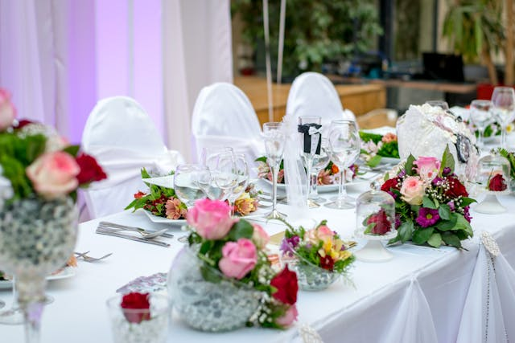

Catering for All Events
Exceptional culinary experiences, excellent service, and attention to detail.

Dignans Catering Company has been a trusted name in Edinburgh's culinary scene for the past five years, delivering exceptional outside catering services with a focus on quality and customer satisfaction. Operating from their vibrant café and brasserie, Dignans seamlessly blends their passion for great food with a commitment to meeting diverse client needs. Serving a loyal base of regular customers and fulfilling contracts with local businesses and offices, they are a staple in the community.